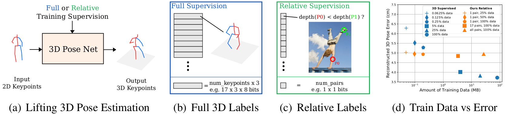
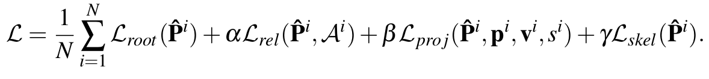
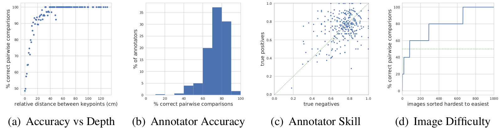
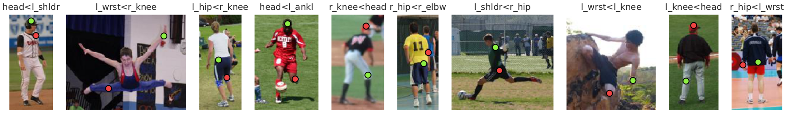
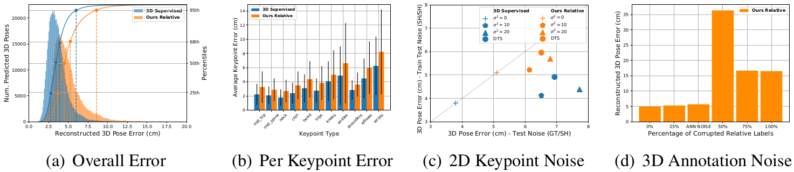
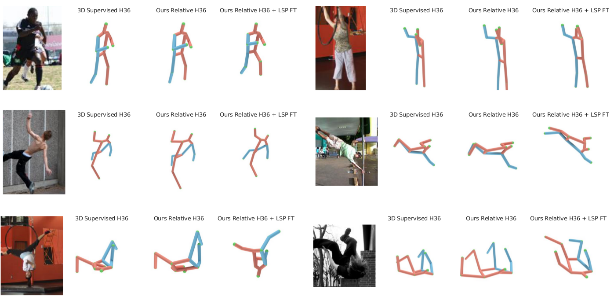

It's all Relative: Monocular 3D Human Pose Estimation from Weakly Supervised Data Oral @ BMVC'18
Introduction
Recent success in 2D pose estimation has been driven by larger, more varied, labeled datasets. While laborious, it is possible for human annotators to click on the 2D locations of different body parts to generate such training data.
Unfortunately, in the case of 3D pose estimation, it is much more challenging to acquire large amounts of training data containing people in real world settings with their corresponding 3D poses. This lack of large scale training data makes it difficult to both train deep models for 3D pose estimation and to evaluate the performance of existing methods in situations where there are large variations in scene types and poses. As a result, researchers have resorted to various alternative methods for collecting 3D pose training data - including motion capture, synthetic datasets, video, and multi-camera setups.
{kind=link}
In this work, we argue that instead of using additional hardware to acquire full 3D ground truth training data from closed settings, Fig. 1(b), we can make use of human annotated relative depth information from images in the wild, Fig. 1(c), for successfully training 3D pose algorithms. When available, 3D ground truth is a very powerful training signal, but our results show that relative depth data can be used at the expense of little accuracy at test time. Our model predicts accurate 3D poses compared to using full supervision even with small amounts of relative training data, Fig. 1(d), here measured in megabytes.
Contributions
Our main contributions are:
-
A loss for 3D pose estimation of articulated objects that can be trained on sparse and easy to collect relative depth annotations, with performance comparable to the state of the art:
The loss is the combination of the following four terms with additional weighting hyperparameters to control the influence of each component: (i) L root: enforcing the root joint of the 3D predictions to be centered at the origin; (ii) L rel: a pairwise ranking loss to encourage our model to predict the correct depth ordering of a 3D keypoint pair; (iii) L proj: a reprojection loss to force the correct location in both x and y in the image space; (iv) L skel: a geometric loss that enforces weak prior knowledge related to the ratio between the lengths of the different limbs.
An empirical evaluation of the ability of crowd annotators to provide relative depth supervision in the context of human poses, measured on the Human3.6M Dataset:
In Fig. 2(a), we see that for keypoint pairs that are separated by more than 20 cm the merged predictions from the annotators are correct over 90% of the time, where random guessing is 50%. While only a small number of annotators annotated over 90% of the pairs correctly, Fig. 2 (b), the vast majority tend to perform better than random guessing. Fig. 2(c) shows that the rate of true positives versus true negatives for every annotator is fairly symmetric, indicating that annotators are equally good at providing the correct answer independently of a keypoint being in front or behind another one. In Fig. 2 (d) we sort the images from hardest to easiest based on the percentage of keypoint pairs that are correctly annotated.
We extend the LSP Dataset with relative joint depth annotations for five random keypoint pairs per image, that can be used for both training and evaluation purposes.
See the Dataset section for more details.
{kind=link}
Results
HUMAN 3.6M

LSP

{kind=link}
Fig. 4(a) shows a histogram of the pose errors on the test set both for our method and the supervised baseline. The mode and median of the two curves are 10mm from each other. However, our method suffers from more catastrophic errors, as can be seen in the longer tail, and in the breakdown of the error over keypoint type in Fig. 4(b). As one might expect, body extremities such as ankles and wrists show a larger error (and deviation). Fig. 4(c) shows the degradation in performance for the cases in which the 2D input keypoints are obtained by adding a Gaussian noise with increasingly high variance (up to 20) to the 2D ground truth keypoints or by using the outputs of a keypoint detector. The performance of the fully supervised baseline is better when the train and test data have the same amount of noise degradation (lower error along the y axis), while our method performs best when noise is only added at test time (lower error along the x axis). In Fig. 4(d) we demonstrate that our model is also robust to noise in the relative depth labels during training. Performance is mostly unchanged when up to 25% of the labels are randomly flipped. The third bar corresponds to the amount of noise obtained from simulated crowd annotators. This is of interest, as it shows performance with noise comparable to what we would expect to collect in the wild. The worst performance is obtained when 50% of the labels are randomly flipped, and improves for cases in which the amount of noise is larger than 50%, as the model is able to exploit structure that is still present in the data, but produces poses that are flipped back to front.
{kind=link}
The LSP dataset, unlike Human3.6M, does not contain ground truth 3D poses. As a result, we evaluate the models by measuring the percentage of relative labels incorrectly predicted compared to the annotations we collected via Mechanical Turk. The 3D supervised model and our relative model, with one comparison per input pose, trained on Human3.6M achieve test errors of 34.4% and 34.3% respectively. We are able to further reduce the error of our relative model to 24.1% by fine-tuning it using the ordinal annotations collected for the LSP training set. Furthermore, training our relative model from scratch using exclusively the LSP training set also outperforms the supervised baseline obtaining an error of 27.1%.
Relative Depth LSP Dataset
We extended the LSP Dataset (using a publicly available json version), with the relative depth annotations collected from Amazon Mechanical Turk. Crowd annotators were presented with an image along with two randomly selected keypoints and were instructed to imagine themselves looking through the camera and report which of the two keypoints appeared closer to them. We forced annotators to choose from one of the two possibilities and did not provide a "same distance option" for ambiguous situations, as those cases can be inferred by inspecting the disagreement between annotators.
For each image in LSP, we collected five random pairs of keypoints, ensuring that five different annotators labeled the same keypoints and image combination, resulting in a total of 50000 annotations by 348 workers, who provided an average of 144 labels each. We merged the five votes per keypoint pair using a crowd annotation system, resulting in a single predicted probabilistic label per pair.
The Figures below contain example visualizations from the labels in the provided dataset: names and ordering of each pair of selected keypoints are written on top of their plot and the green keypoint is annotated to be closer to the camera compared to the red one. The confidence of the label in the bottom-right box determines the color of the connection between the keypoints.
The Reltive Depth LSP Dataset contains the following data:
- 'joint_names': The ordered list of the names of the 2D keypoints.
- 'images': The list of 2000 annotations for each image in LSP.
Every annotation is composed of:
- 'im_file': Name of the image file.
- 'is_train': Boolean flag indicating if the image is in the train or test set.
- 'keypoints': List of the 28 coordinates containing the 2D skeleton of every image.
- 'occluded': List of flags indicating the visibility of every keypoint.
- 'anns': List of 5 keypoint pairs containing for every pair:
- the indices of the pair;
- the raw depth label from every annotator;
- the merged label;
- the probabilistic confidence and associated risk of the merged label.
Download
We provide 1) a pytorch implementation of our algorithm, 2) the crowd collected relative depth annotations of the LSP dataset in JSON file format, and 3) the output of our relative model on all of the Human3.6M and LSP test set.
Notes:- Code Version [1.0.0].
- Data Version [1.0].
- Output Poses Date [7/27/2018].
- This code and data are licensed under the MIT License.
Cite
If you find our paper or the released data or code useful to your work, please cite:
@inproceedings{ DBLP:conf/bmvc/RonchiAEP18, author = {Matteo Ruggero Ronchi and Oisin {Mac Aodha} and Robert Eng and Pietro Perona}, title = {It's all Relative: Monocular 3D Human Pose Estimation from Weakly Supervised Data}, booktitle = {British Machine Vision Conference 2018, {BMVC} 2018, Northumbria University, Newcastle, UK, September 3-6, 2018}, pages = {300}, year = {2018}, crossref = {DBLP:conf/bmvc/2018}, url = {http://bmvc2018.org/contents/papers/0182.pdf}, timestamp = {Mon, 17 Sep 2018 15:39:51 +0200}, biburl = {https://dblp.org/rec/bib/conf/bmvc/RonchiAEP18}, bibsource = {dblp computer science bibliography, https://dblp.org}}